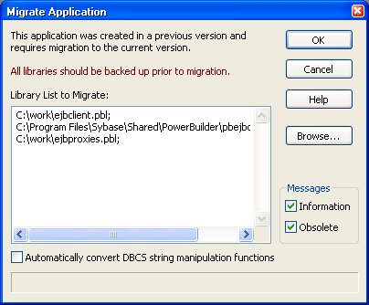

When you upgrade to a new version of PowerBuilder, your existing targets need to be migrated to the new version. Typically, when you open a workspace that contains targets that need to be migrated, or add a target that needs to be migrated to your workspace, PowerBuilder prompts you to migrate the targets. However, there are some situations when you need to migrate a target manually. For example, if you add a library that has not been migrated to a target's library list, you will not be able to open objects in that library until the target has been migrated.
You cannot migrate a target that is not in your current workspace and you must set the root of the System Tree or the view in the Library painter to the current workspace.
There are some steps you should take before you migrate a target:
 Always back up your PBLs before migrating Make sure you make a copy of your PBLs before migrating. After
migration, you cannot open them in an earlier version of PowerBuilder.
Always back up your PBLs before migrating Make sure you make a copy of your PBLs before migrating. After
migration, you cannot open them in an earlier version of PowerBuilder.
The Migration Assistant is available on the Tool page of the New dialog box. For help using the Migration Assistant, click the Help (?) button in the upper-right corner of the window and click the field you need help with, or click the field and press F1. If the Migration Assistant finds obsolete code, you can fix it in an earlier version of PowerBuilder to avoid errors when you migrate to the current version.
PowerBuilder libraries (PBLs) contain a header, source code for the objects in the PBL, and binary code. There are two differences between PowerBuilder 10 and later PBLs and PBLs developed in earlier versions of PowerBuilder:
Before opening a PBL, PowerBuilder checks its header to determine whether or not it uses Unicode encoding. PBLs are not converted to Unicode unless you specifically request that they be migrated.
You cannot expand the icon for a PBL from PowerBuilder 9 or earlier in the Library painter. To examine its contents, you must migrate it to PowerBuilder 10 or later.
When you attempt to open a workspace that contains targets from a previous release in PowerBuilder, the Targets to be Migrated dialog box displays. You can migrate targets from this dialog box, or clear the No Prompting check box to open the Migrate Application dialog box.
 PowerBuilder dynamic libraries If you plan to reference a PowerBuilder dynamic library (PBD)
that was encoded in ANSI formatting (for example, if it was created
in PowerBuilder 9 or earlier), you must regenerate the PBD to use
Unicode formatting. Dynamic libraries that you create in PowerBuilder
10 or later use Unicode formatting exclusively.
PowerBuilder dynamic libraries If you plan to reference a PowerBuilder dynamic library (PBD)
that was encoded in ANSI formatting (for example, if it was created
in PowerBuilder 9 or earlier), you must regenerate the PBD to use
Unicode formatting. Dynamic libraries that you create in PowerBuilder
10 or later use Unicode formatting exclusively.
The Migrate Application dialog box lists each PBL that will be migrated and lets you choose the type of messages that display during the migration process.

If you click OK, each PBL is first migrated to the new version of PowerBuilder. Then PowerBuilder converts the source code from DBCS to Unicode, performs a full build, and saves the source code back to the same file. It might also make some changes to your scripts. These changes display in informational messages in the Output window and are written to a log file for each PBL so that you can examine the changes later. Recommended changes are also written to the log file.
These two lines from a log file indicate that the FromAnsi function is obsolete and was replaced with the String function, and that an encoding parameter should be added to an existing instance of the String function:
2006/01/27 08:20:11 test.pbl(w_main).cb_1.clicked.4: Information C0205: Function 'FromAnsi' is replaced with function 'String'.
2006/01/27 08:20:11 test.pbl(w_main).cb_2.clicked.4: Information C0206: Append extra argument 'EncodingAnsi!' to function 'String' for backward compatibility.
The log file has the same name as the PBL with the string _mig appended and the extension .log and is created in the same directory as the PBL. If no changes are made, PowerBuilder creates an empty log file. If the PBL is migrated more than once, output is appended to the existing file.
PowerBuilder makes the following changes:
ALIAS FOR "functionname;ansi"
 DBCS users only If you select the Automatically Convert DBCS String Manipulation
Functions check box, PowerBuilder automatically makes appropriate
conversions to scripts in PowerBuilder 9 applications. For example,
if you used the LenW function, it is converted
to Len, and if you used the Len function,
it is converted to LenA. The changes are written
to the Output window and the log file. This box should be selected
only in DBCS environments.
DBCS users only If you select the Automatically Convert DBCS String Manipulation
Functions check box, PowerBuilder automatically makes appropriate
conversions to scripts in PowerBuilder 9 applications. For example,
if you used the LenW function, it is converted
to Len, and if you used the Len function,
it is converted to LenA. The changes are written
to the Output window and the log file. This box should be selected
only in DBCS environments.
When you add PBLs from a previous release to a PowerBuilder target's library list, the PBLs display in the System Tree. The PBLs are not migrated when you add them to the library list. Their contents do not display because they have not yet been converted. To display their contents, you must migrate the target.
You can migrate a target from the Workspace tab of the System Tree by selecting Migrate from the pop-up menu for the target. You can also migrate targets in the Library painter if they are in your current workspace.
 To migrate a target in the Library painter:
To migrate a target in the Library painter:
Select the target you want to migrate and select Entry>Target>Migrate from the menu bar.
The Migrate Application dialog box displays.
Select OK to migrate all objects and libraries in the target's path to the current version.